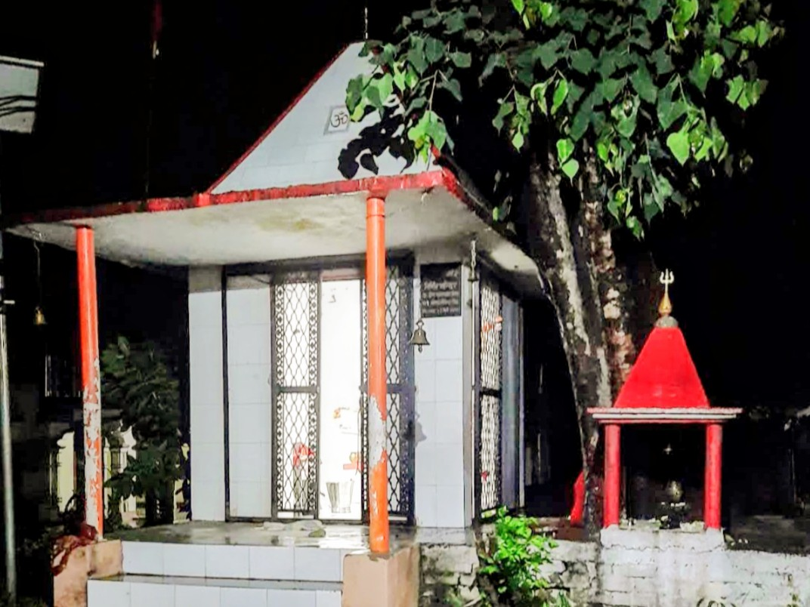
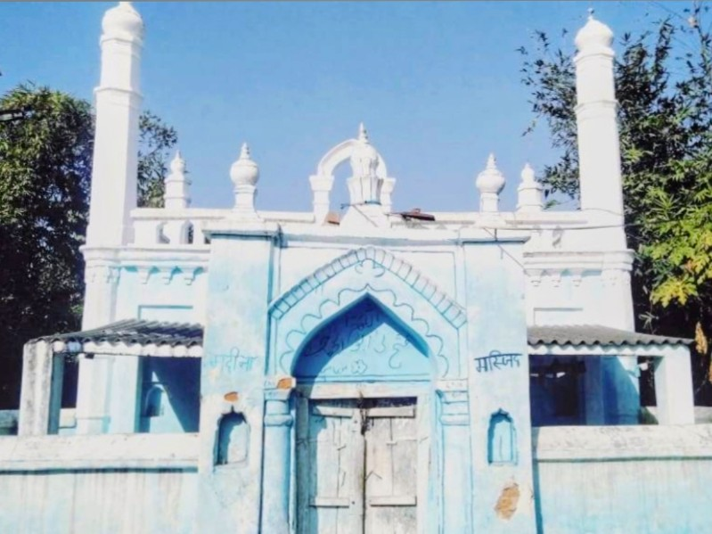

Gram Sabha Maksoodan is blessed with a rich spiritual heritage, where temples, ghats, and mosques stand as symbols of our cultural diversity and religious harmony. Situated along the sacred banks of River Gomti, our village has been a center of faith and devotion for generations.
ग्राम सभा मकसूदन एक समृद्ध आध्यात्मिक विरासत से संपन्न है, जहां मंदिर, घाट और मस्जिद हमारी सांस्कृतिक विविधता और धार्मिक सद्भाव के प्रतीक हैं। पवित्र गोमती नदी के तट पर स्थित, हमारा गांव पीढ़ियों से आस्था और भक्ति का केंद्र रहा है।
Sacred places of worship and devotion

Ancient temple dedicated to Lord Hanuman, serving as a spiritual center for devotees. The temple witnesses large gatherings during Hanuman Jayanti and every Tuesday.

Sacred temple dedicated to Lord Rama. The temple hosts grand celebrations during Ram Navami with Ramayan path, bhajans, and cultural programs that unite the entire community.

Revered shrine of Goddess Durga, the temple becomes the epicenter of devotion during Navratri. Annual fairs, jagrans, and cultural events are organized with great enthusiasm.
Sacred riverfront sites for rituals and ceremonies
River Gomti surrounds Maksoodan on North & West sides
गोमती नदी मकसूदन को उत्तर और पश्चिम दिशा से घेरती है
These ghats serve as sacred cremation and ritual sites for village communities along River Gomti, preserving ancient traditions of final rites and spiritual ceremonies.

One of the main ghats serving the community for final rites and ancestral ceremonies. The ghat holds deep spiritual significance for performing last rites and shraddh rituals.

Important ghat serving the local community for various religious and ritual activities. The site is well-maintained and accessible for community ceremonies.

Historically significant ghat associated with the Nishad community, reflecting the deep connection between river livelihood and spiritual practices. The ghat represents cultural heritage and traditional river-based community life.

Sacred ghat used for performing funeral rites and religious immersion ceremonies. The location provides a serene environment for final rites and spiritual observances.
Places of Islamic worship and community gathering
Religious Harmony: Our village takes pride in its communal harmony where people of all faiths live together peacefully, respecting each other's beliefs and traditions.

Central mosque serving the Muslim community of the village. The mosque hosts daily prayers and becomes a focal point during Eid celebrations, bringing the community together in worship and celebration.
Interactive map showing all temples, ghats, and mosques
Note: Update the map with actual GPS coordinates of religious sites for accurate location display